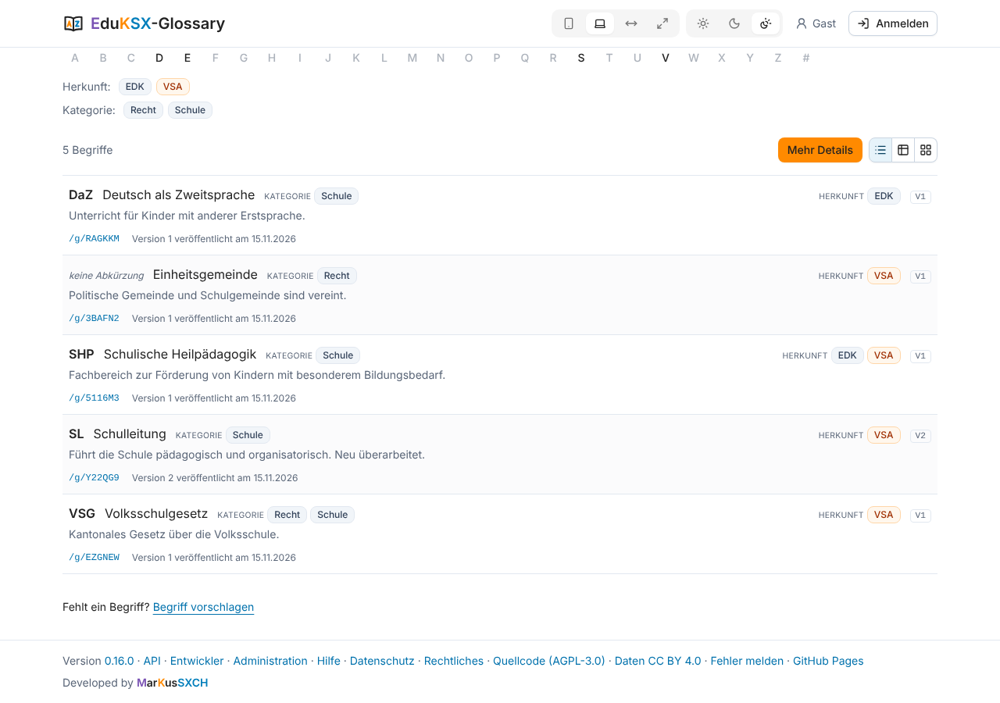
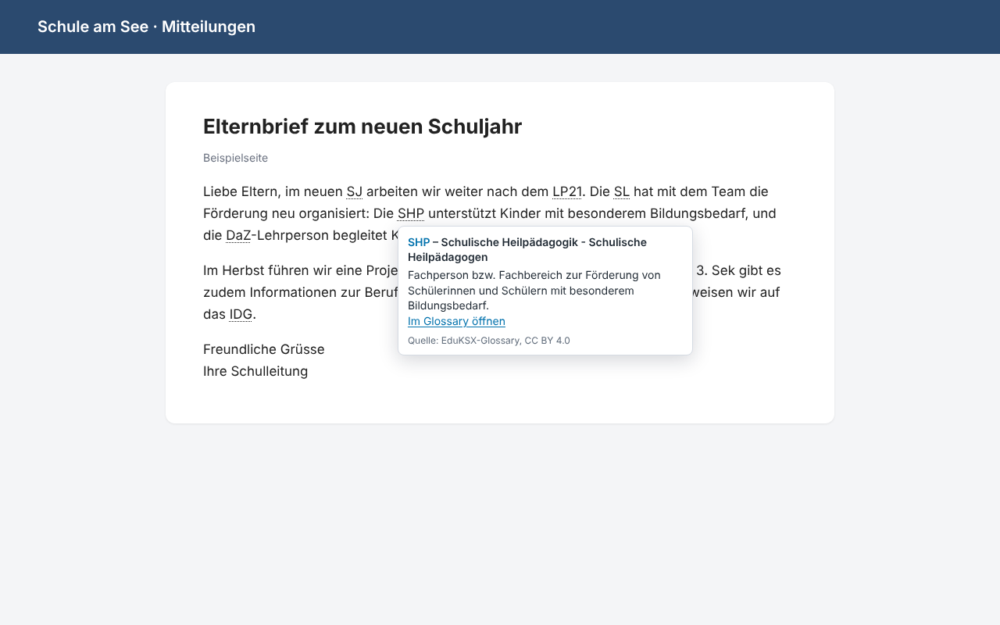

EduKSX-Glossary
Abkürzungen aus Schule und Verwaltung – verständlich erklärt.
SL, SHP, DaZ, VSA, LP21: Elternbriefe, Lehrpläne und Verordnungen stecken voller Abkürzungen. Das EduKSX-Glossary sammelt Begriffe aus Volksschule, Schulgemeinde und Gemeinde, erklärt sie kurz und nennt die Quelle – frei zugänglich, ohne Konto, mit offenen Daten.
Glossary öffnen Für Entwickler Lesefassung

Für wen?
Eltern und Öffentlichkeit
Begriffe nachschlagen, ohne Anmeldung – auf dem Handy oder als installierbare WebApp.
Schulen und Gemeinden
Eine gemeinsame Sprache im Team: eigene Darstellung der Begriffe für die Organisation, Vorschläge mit Freigabe.
Verwaltung und Behörden
Abkürzungen in eigenen Webseiten automatisch erklären – per Script oder Browsererweiterung.
Entwicklerinnen und Entwickler
Offene REST-API mit OpenAPI-Beschreibung, Change-Feed und Index für die Erkennung.
Was es kann
- Suchen und filtern nach Abkürzung, Bezeichnung, Schreibweise, Kategorie und Herkunft.
- Jeder Begriff mit Quelle, Gültigkeit, Version und Verlauf – nachvollziehbar statt Hörensagen.
- Mitmachen: Korrekturen und neue Begriffe vorschlagen; die Redaktion prüft und veröffentlicht.
- Organisationen mit gemeinsamer Darstellung, Einladungen und eigener API.
- Exporte nach Excel, CSV, PDF und Markdown.
- Sicher: zweiter Faktor, Verlauf aller Änderungen, Daten in der Schweiz.

Offen und frei
Daten: CC BY 4.0
Frei nutzbar, auch kommerziell – mit Quellenangabe «EduKSX-Glossary (glossary.eduksx.ch)».
Code: AGPL-3.0
Selbst betreiben, anpassen, weitergeben; geänderte Fassungen im Netz bleiben offen. Script und Erweiterung unter MIT.
Selbst hosten
Ein signiertes Docker-Image je Release, SQLite oder PostgreSQL, Updates mit Rücksprung – Anleitung.
Öffentliche Beta
Das Glossary ist seit Version 0.16.0 öffentlich nutzbar; Inhalte und Funktionen wachsen laufend. Rückmeldungen und Begriffe sind willkommen: Begriff vorschlagen oder über die Issue-Formulare.